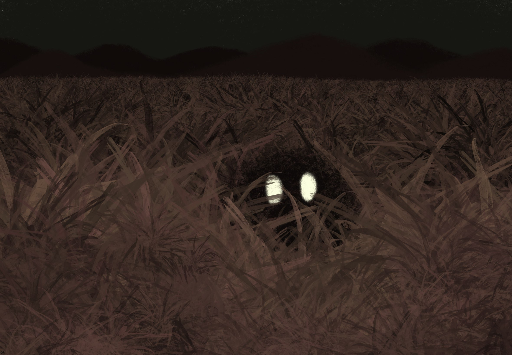
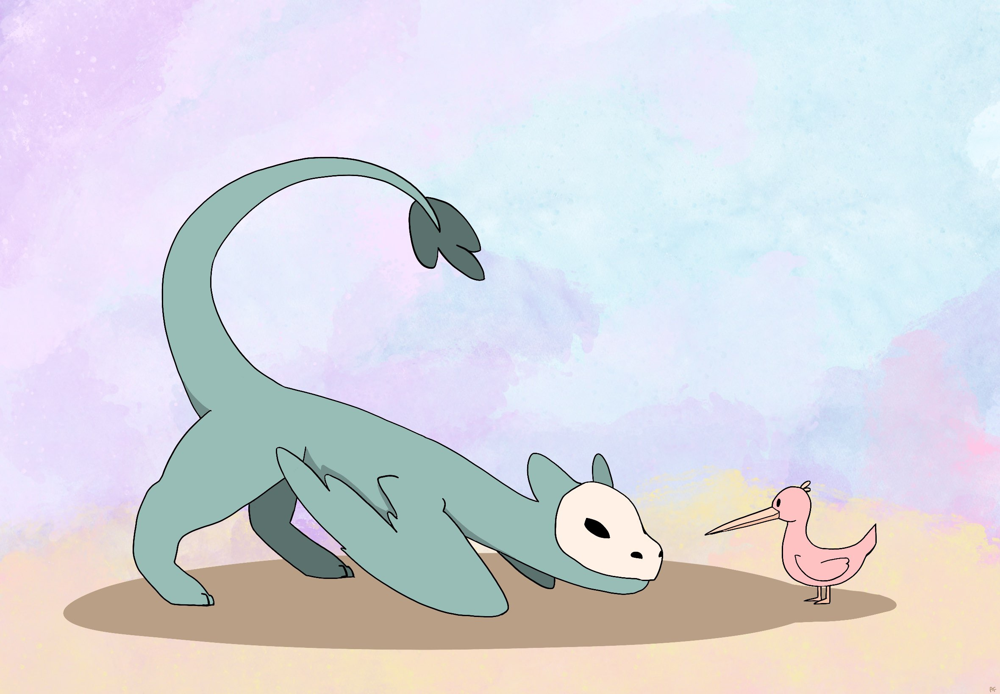
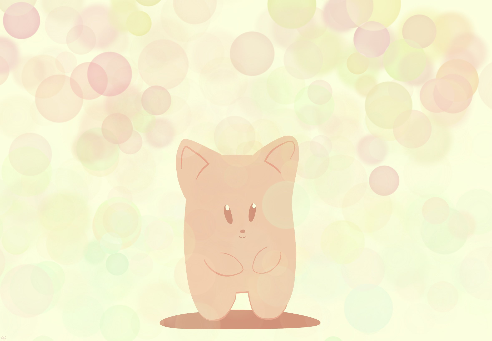
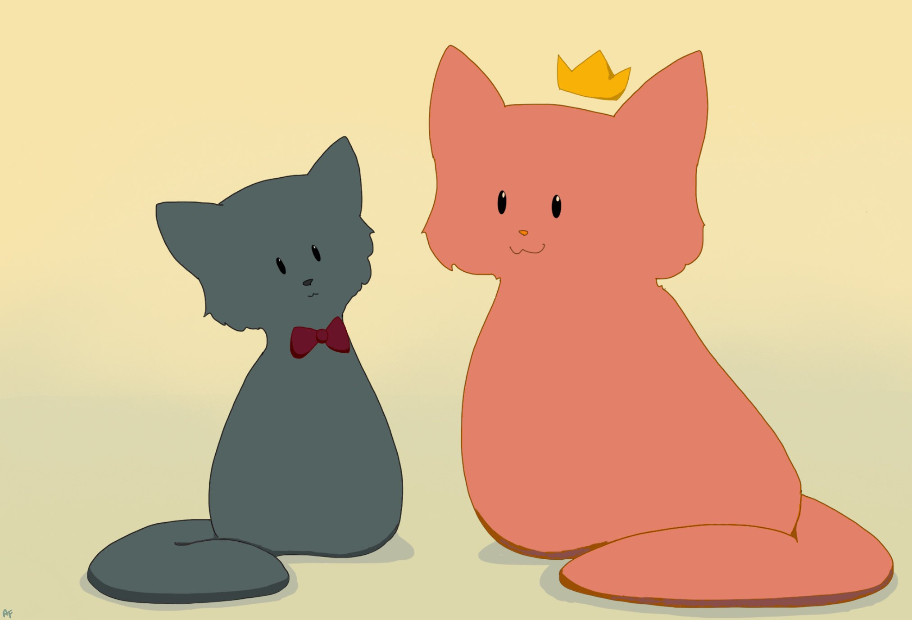

Mlorp
The Mlorp is an odd blob shaped creature with eyes that glow in the dark. It can form itself into any shape that it pleases, although it finds it easiest to just stay blob shaped. Mlorps come in all shapes and sizes imaginable. They are also capable of eating anything that they can stretch their bodies around, and so are often considered the garbage collectors of the ecosystem (in a friendly positive way).

Whoodle
The Whoodle is a small bird with a long beak and a tuft of feathers on the top of its head. Its head and body are pink, and its beak, legs, and feather tuft are yellow. The Whoodle is named for its whistling warble that sounds sort of like it is saying "whoodle whoodle whoodle". Whoodles eat all kinds of bugs and can form symbiotic relationships with larger creatures by picking the bugs out of their feathers or fur.

Ymb
The Ymb is a light orange cat-like creature that stands upright. It has very large ears and practically no distinguishable neck. They are very shy creatures that live in the desert, only coming out during dawn and dusk. They are rarely seen due to their secretive nature.

Cooper
Cooper is your average house cat, except he wears a red bowtie and appears to be able to cross the borders of space and time. He comes and goes wherever and whenever he pleases, and nobody really pays him much mind.